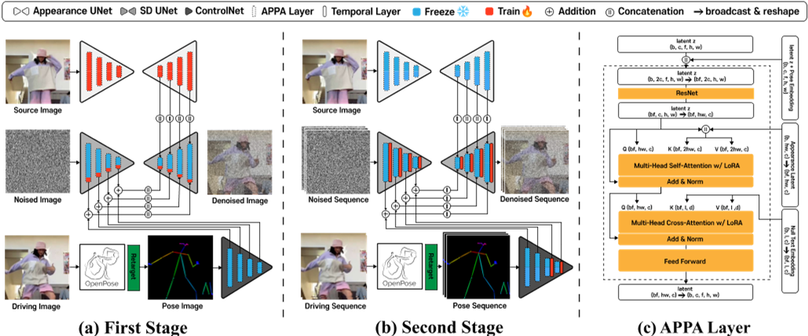

TCAN: Animating Human Images with Temporally Consistent Pose Guidance using Diffusion Models
| 缩写 | 英文 | 中文 |
|---|---|---|
| APPA | APpearance-Pose Adaptation layer | |
| PTM | Pose-driven Temperature Map |
2024，开源
核心问题是什么?
基于diffusion model的pose驱动人体图像的视频生成，能够生成逼真的人体视频，但在时间一致性和对pose控制信号的鲁棒性方面仍然存在挑战。
本文方法
我们提出了 TCAN，一种姿势驱动的人体图像动画合成方法，它对错误姿势具有鲁棒性，并且随着时间的推移保持一致。
- 利用预先训练的 ControlNet，但不进行微调，利用其“文本+动作 -> 图像”的能力。
- 保持 ControlNet 冻结，将 LoRA 适配到 UNet 层中，使网络能够在姿势空间和外观空间之间的对齐。
- 通过向 ControlNet 引入额外的时间层，增强了针对异常姿态的鲁棒性。
- 通过分析时间轴上的注意力图，设计了一种利用姿势信息的新型温度图，从而实现更静态的背景。
效果
大量实验表明，所提出的方法可以在包含各种姿势（例如《赤壁》）的视频合成任务中取得有希望的结果。
核心贡献是什么？
-
adapts the latent space between appearance and poses.
-
使用预训练的ControlNet：与以往方法不同，TCAN使用预训练的ControlNet而不进行微调，利用其从大量姿势-图像-标题对中获得的知识。
-
LoRA适应：为了在保持ControlNet冻结的同时对齐姿势和外观特征，TCAN采用了LoRA（Low-Rank Adaptation）适应UNet层。
-
时间层的引入：通过在ControlNet中引入额外的时间层，增强了对姿势检测器异常值的鲁棒性。
-
注意力图分析：通过分析时间轴上的注意力图，设计了一种利用姿势信息的新颖温度图，允许更静态的背景。(仅推断时使用)
-
姿势重定向方法：提出了一种姿势重定向方法，以适应源图像中的对象与实际人体不同的身体比例。
大致方法是什么？

Base Model 为SD。
方法涉及两阶段训练策略。我们从训练视频中随机选择两个图像，分别用作source图像和driving图像。
第一阶段是以多张image为条件的图像生成任务，appreance UNet 和 APPA 层在source图像上进行condition训练，同时 ControlNet 被freeze。多张是指一张 driving pose 和一张 source image.
在第二阶段，训练 UNet 和 ControlNet 中的时间层。
LoRA 只加在ControlNet上，时序层在 UNet 和 ControlNet 上都有。
| 输入 | 输出 | 方法 |
|---|---|---|
| driving frame | pose information | OpenPose |
| pose information | pose image | |
| pose image noise | encoder feature z | UNet Encoder with ControlNet |
| reference image | intermediate feature maps of the appearance za | appearance UNet |
| encoder feature z appearance information za | denoised image | UNet Decoder with attention |
pose 以 ControlNet 形式注入，reference 用 appearadce UNet 编码后以 UNet Decoder Cross-attention 形式注入。
[❓] noise 编码和 reference 编码，为什么要使用不同的 UNet 参数？
reference图像注入
z（encoder feature）与za（appearance information）结合
以attention的方式结合z和za，仅应用于UNet Decoder部分

APPA层
没有APPA的UNet能生成与driving pose相似的动作，但不能保持reference image中的外观。
分析原因：appearance Za 与此包含 pose information 的 Z misalignment.
在UNet Decoder attention层中引入APPA layer（类似LoRA）
解决方法： 引入APPA层有以下三个作用
- 解决frozen ControlNet引入的artifacts
- 防止对training domain过拟合
- appearance与pose解耦
相当于是对 ControlNet 的微调，只是用 LoRA 代替全参微调。
对错误动作的鲁棒性
在UNet的所有层后面加入时序层，仅在第二阶段的训练启用时序层。
Temporal层用于解决pose不正确引入的artifacts。pose模块（ControlNet）的实现类似AnimateDiff。
背景闪烁问题
引入Pose-driven Temperature Map。
第二阶段训练完成后，把 Temporal attention layer 的 attention map 可视化。
把image resize到和attention map相同的大小，发现前景像素对应的attention的对角值更高。

attention map 是\(QK^T\) 矩阵，在时序层，Q.shape=K.shape=(bxwxh)xfxc,
因此，attention map.shape=(bxwxh)xfxf=bxwxh xfxf
可视化后，每个像素的内容fxf代表Q和k在P这个像素上在时间上相关性。
attention map 中的值比较平均，说明Output 相当于input 的均值。
作者期望背景表现为这种效果。
attention map 的值比较大，说明在这个位置看比较强的相关性。
attention map 中比较大的值出现在对角线上，说明是顺序相关的。当前前景是这个效果。
attention map 中比较大的值没有明显规律，说明相关没有明显规律。当前背景是这个效果。
attention map 中没有较大值，说明没有明显相关性。
与前景相比，背景在时间轴上的焦点往往不太具体，因此可以通过attention map，仅对背景部分进行平滑。
| 输入 | 输出 | 方法 |
|---|---|---|
| pose image | binary mask B | 画了骨架的地方标记为1，否则为0 |
| binary mask B | distance map D | 计算每个像素到离它最近的骨骼的距离 |
| distance map D | PTM \(\mathcal{T} \) | \(\mathcal{T} = τ * D + 1\) PTM代表attention的temperature |
| PTM \(\mathcal{T} \) | resized PTM \(\mathcal{T} \) | 把PTM \(\mathcal{T} \) resize到与attention map相同的大小 |
以以下方式把PTM \(\mathcal{T} \) 引入到UNet attention layer中：离骨架距离远（被认为是背景）→ D 大 →\(\mathcal{T} \)大 → attention score 小 → 与时间相关性小 → 稳定

长视频推断策略
MultiDiffusion [2] along the temporal axis
推断时，把推断序列切成有重叠的clip，在一个step 中推断所有clip的噪声，把overlap 的噪声average,得到的噪声进入下一个step.
2D重定向(附录C)
推断时使用，调整driving pose中的点的位置。
固定neck，按层级关系，根据ref中的关节比例，依次调整 driving pose中的每个点的位置。
✅ 根据2D比例做重定向，不能处理透视带来的变形问题。
训练
训练策略
| 阶段 | freeze | trainable | 特有模块 |
|---|---|---|---|
| 第一阶段 | denoising UNet with SD1.5 OpenPose ControlNet | appreance UNet with Realistic Vision LoRA layer in APPA | 无 |
| 第二阶段 | denoising UNet with SD1.5 OpenPose ControlNet | temporal layer in denoising UNet temporal layer in ControlNet | temporal layer in denoising UNet temporal layer in ControlNet |
两个阶段训练的参数是独立的，没有联合训练的过程。
没有针对长序列生成修改训练策略。
数据集
训练集：TikTok
验证集：DisCo(类似于TikTok Style)
测试集：animation character,自己构建的Bizdrre dataset.
loss
同Stable Diffusion Model
训练策略
Base Model: SD 1.5
appearance UNet: Civitai Realistic Vision, Openpose ControLNet
实验与结论
实验一： 横向对比
- DisCo(Open Pose)
- MagicAnimate(Dense Pose)
- TCAN
效果:
-
当 Open Pose 丢失关健信息时,1和2会出现严重的问题，但3能得到时序一致的输出。
[❓] TCAN 通过引入时序层解决这个问题。1和2的结构中无时序层?

3在所有指标上都最优，除了LPIPS。作者认为这是因为TCAN没有使用额外的 large-scale human dataset.
实验二：
- motion 模块使用 AnimateDiff verson 1 作为初始权重。
- motion 模块使用 AnimateDiff verson 2 作为初始权重。
效果: 2明显优于1
实验三： 使用不同体型的数据作测
- DisCo + retargeted pose
- MagicAnimate + Dense Pose
- TCAN + retargeted pose
- TCAN + retargeted Poe, 且 freeze ControlNet.
效果: 1 的时序一致性较差。2的前景会变形成与driving video相同的体型。3的外观保持较差。 4能很好地给ref的外观、体型与driving的动作。
结论：
- freeze ControlNet 这一步很重要，它能将pose分支与appearance分支的责任解耦。
- 预训练的 ControlNet 使模型具有对不同体型的泛化性。
实验四： APPA ablation.
- freeze ControlNet + APPA
- unfreeze Control Net.
效果:
- 2中预训练的 ControlNet出现先验知识的退化，产生artifacts.
实验五：
- ControlNet 中无时序层
- ControlNet + 时序层
- ControlNet + 时序层 + PTM
效果: 2能将错误的pose平滑,3能去除闪烁问题。
评价指标：
图像质量: L1，SSIM，LPIPS，FID
视频质量: FID-FVD，FVD
有效
-
时间一致性：TCAN专注于生成在时间上连贯的动画，即使输入的姿势检测有误差，也能保持动画的稳定性。
-
扩展到不同领域：TCAN不仅在TikTok数据集上训练，还能够泛化到未见过的领域，如动画角色。
-
用户研究：进行了用户研究来评估TCAN在不同数据集上的表现，包括动画角色，结果显示TCAN在保持运动和身份、背景、闪烁和整体偏好方面均优于现有技术。
-
实验结果：TCAN在多个指标上展示了优越的性能，包括L1损失、结构相似性（SSIM）、感知损失（LPIPS）、Fréchet距离（FID）和视频质量指标（FID-VID和FVD）。
局限性
启发
遗留问题
TCAN（Temporally Consistent Human Image Animation）技术在实际应用中可能面临以下挑战和限制：
-
姿势检测器的准确性：TCAN依赖于姿势检测器来提供输入姿势序列。如果姿势检测器出现误差，可能会影响生成动画的质量和时间一致性。
-
数据集的多样性：TCAN在特定数据集（如TikTok数据集）上训练时表现良好，但在处理与训练数据分布显著不同的数据时，可能需要额外的调整或训练。
-
计算资源：高质量的图像和视频生成通常需要大量的计算资源。TCAN作为一种基于扩散模型的技术，可能在实际部署时面临计算能力和效率的挑战。
-
过拟合风险：在特定领域内训练时，模型可能会过拟合到该领域的特定特征，从而降低其在其他领域的适用性。
-
2D 骨骼重定向，必须使用与目标角色相适配的骨骼，否则会导致人物变形。
-
内容的可控性：虽然TCAN提供了一定程度的控制能力，但在生成特定风格或满足特定条件的内容方面可能仍有限制。
-
实时性能：在需要实时生成动画的应用场景中，TCAN的处理速度和响应时间可能是一个考虑因素。
-
模型的可解释性：深度学习模型通常被认为是“黑箱”，TCAN模型的决策过程可能不够透明，这可能限制了其在需要高度可解释性的应用中的使用。
-
对抗性攻击的脆弱性：像其他基于深度学习的模型一样，TCAN可能对精心设计的对抗性攻击敏感，这可能需要额外的防御措施。
-
长期视频生成的挑战：由于内存限制，TCAN可能难以一次性生成长期视频。虽然可以通过多扩散方法来解决这个问题，但这可能会影响视频的整体一致性。
这些挑战和限制表明，尽管TCAN在技术上具有创新性，但在将其应用于实际问题之前，需要仔细考虑和解决这些潜在的问题。
参考材料
- 项目页面：https://eccv2024tcan.github.io/